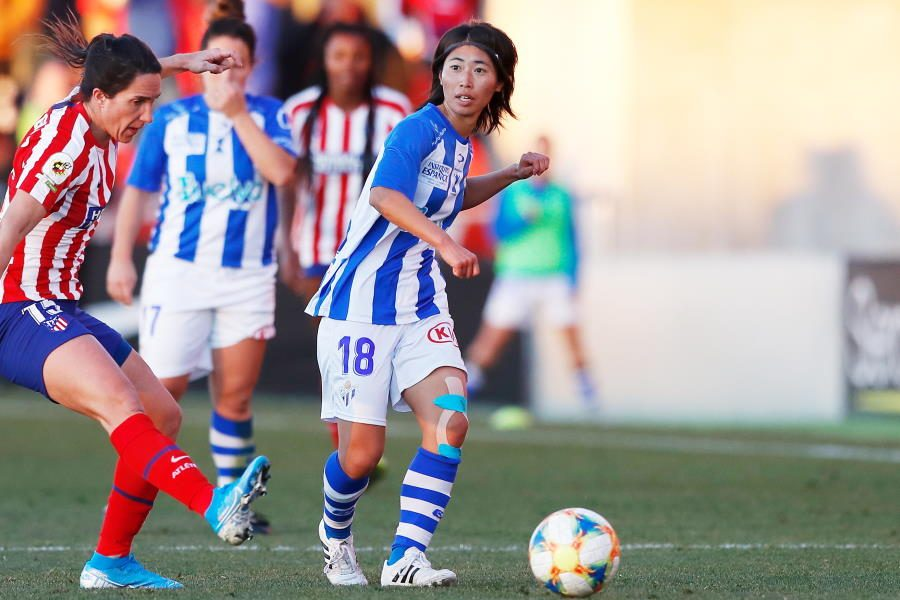
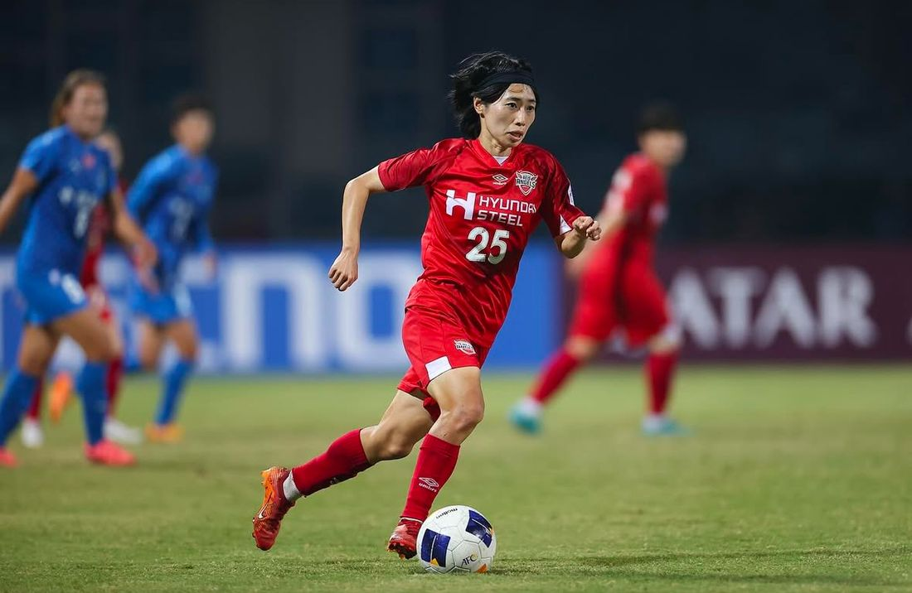

「続けるために、地元を離れた」
華やかな経歴の裏に、居場所を失った時期も、給与が支払われない現実もありました。彼女の話が人に届くのは、乗り越え方が具体的だからです。
12歳、地元を離れるという最初の決断
山口県山口市小郡生まれ。5歳、友達とのボール蹴り遊びからサッカーを始めました。2006年、小学校卒業と同時に、日本サッカー協会が運営する中高一貫の育成機関・JFAアカデミー福島へ1期生として入校します。
山口にいたままでは、その先のサッカーは続けられない。12歳の子どもが家族と地元を離れ、福島で寮生活に入る。男子であれば選択肢は各地にありましたが、当時の女子にとって「続けるために地元を離れる」はほとんど唯一の道でした。彼女の挑戦の原点はここにあります。
10代で世界と戦い、20代で居場所を失った
15歳で飛び級のU-17女子ワールドカップ選出。2010年の同大会では6試合4ゴールを挙げ準優勝。2012年のU-20女子ワールドカップでは、トップ下からサイドバックまで務めながら全6試合で6ゴール2アシスト、日本を大会初の銅メダルへ導き、シルバーシューズ賞を受賞しました。2013年にはなでしこジャパンにも初選出されています。
その後入団したINAC神戸レオネッサはタイトルを重ねる強豪でした。しかし彼女自身は定位置をつかめず、出場機会を減らしていきます。注目され、代表に呼ばれ、それでもピッチに立てない時期が確かにありました。
2015年、彼女が選んだのは当時2部のノジマステラ神奈川相模原。「攻撃も守備も90分間チーム一丸となって走っている姿を見て、このチームで1部昇格を達成したい」。格を下げる移籍ではなく、自分が必要とされ成長できる場所を選ぶ移籍でした。翌2016年に2部優勝・1部昇格を果たします。
スペインで、一番苦手なことを続けた
2019年、スペイン1部スポルティング・ウエルバへ。しかし2シーズン目、彼女は行き詰まります。技術的には通用している。それなのにボールが来ない。

転機は、スペインに長く住む日本人からの助言でした。スペインでは「こうしたい」を強く表現することが不可欠だ、と。
ボールをもらえなかったときに、ちゃんと欲しかったと表情や言葉で伝える。出してくれるように強くアピールする。たとえ演技でもいいから表現することが必要だと教わりました。 ― 田中陽子
アピールは、彼女がもっとも苦手とすることでした。それでも試合前に「取ったらワンタッチで出してね」と毎回声をかけ、練習でも同じ要求を繰り返す。やがて監督やコーチの見る目が変わり、パスが来るようになり、得点もアシストも増えていきました。
「実力不足」と抽象化せず、ボールが来ない → 要求が伝わっていない → 苦手でも表現する、と分解して行動を変えた。技術ではなく、姿勢の話です。
理不尽と、隣の国と
スペインで最後に所属したクラブでは、給与の未払いと契約をめぐるトラブルが起きました。女子サッカーの環境の厳しさが、もっとも具体的な形で表れた出来事です。
そこへ声をかけたのが韓国のエージェントでした。2022年8月、WKリーグ11連覇の強豪・仁川現代製鉄レッドエンジェルズへ。ユニフォームの名前表記は「요코（ようこ）」。在籍中に2度のリーグ優勝を経験します。

韓国の女子サッカーにプロリーグはなく、企業スポーツのような仕組み。設備は整うが観客は少ない。スピードとフィジカルは日本より強く、中盤で組み立てる選手が少ないからこそ日本人の技術と戦術眼が評価される——。環境を評論するのではなく、その環境で自分の価値がどこにあるかを見つける。国が変わるたびに、彼女はそれをやってきました。
そして、一番難しい場所へ帰ってきた
2024年12月、レノファ山口FCレディース加入が発表されます。クラブ初のプロ契約選手であり、地域リーグのチームにとっては異例のニュースでした。契約が決まらなかったからではありません。韓国の他クラブやWEリーグを含め、複数のオファーがある中での選択です。
「一番難しい場所に身を置くことが、自分をもっと成長させてくれる」と思って、これまで積み重ねてきた経験や力を還元できる場所はどこだろうと考えたときに、レノファレディースが最も自分に合っていると感じました。 ― 田中陽子
加入1年目の2025年、チームは10年近く届かなかったなでしこリーグ2部昇格を達成。2026年、背番号10を背負い、4月4日にリーグ通算150試合出場を記録しました。初出場は2010年4月4日。ちょうど16年後の同じ日でした。
チームメイトの多くはフルタイムで働きながらプレーしています。仕事の都合で練習に来られない選手もいる。それでも誰も弱音を吐かない。世界を見てきた彼女は、その環境を下に見るのではなく「プロ選手とはまた違う強い思い」があると語ります。